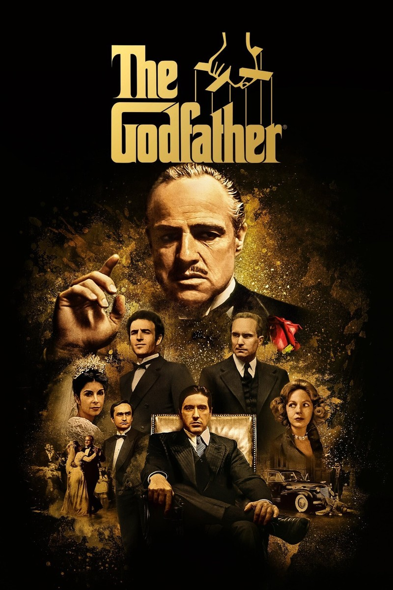

🥠Movie Reviews
🔥 Ground Zero (2025)

Review: Ground Zero 2025 delivers a fair punch of action with Emraan Hashmi. While not groundbreaking, it’s a decent watch with some gripping moments. Hashmi's performance was passable, and the plot was serviceable.
Rating: âââââââ (7/10)
💼 The Godfather (1972)

Review: Great. A must-watch. It's classic — you won't know what you missed if you haven't watched this.
Rating: âââââââââ (9/10)
🛡️ Jaat (2025)
Review: Was okay — action and drama with a little comedy. Watchable if you like Sunny Deol’s style.
Rating: âââââââ (7/10)